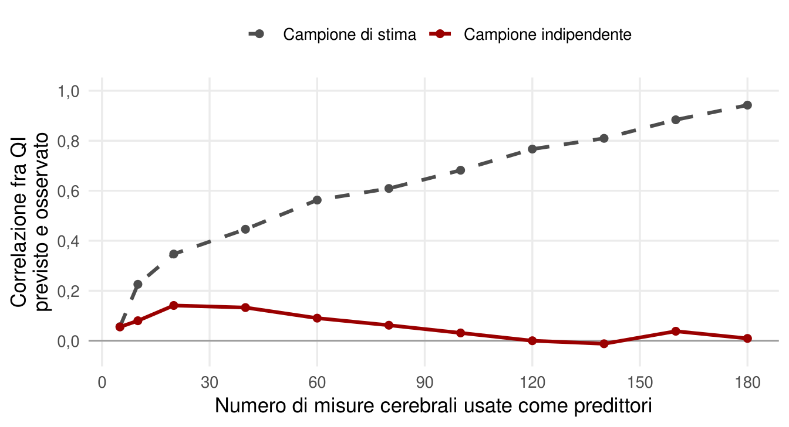
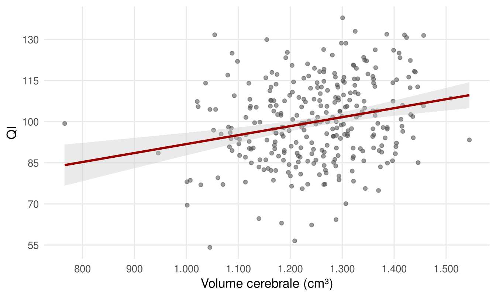

11 Cervello e intelligenza
Dove si trova l’intelligenza nel cervello? La domanda è naturale e quasi del tutto sbagliata. Quando una persona risolve un problema di ragionamento si attivano molte aree, comprese quelle visive che elaborano le figure. Ma questo dice come funziona il cervello in generale, non perché alcune persone risolvano il problema meglio di altre. Le aree visive, per esempio, si attivano in tutti, e non distinguono chi va bene da chi va male.
La domanda che interessa lo studio delle differenze individuali è un’altra: quali caratteristiche del cervello, nella struttura, nelle connessioni, nel modo di attivarsi, distinguono persone con QI diverso? Le neuroscienze hanno accumulato evidenze che il fattore generale è legato all’anatomia e al funzionamento cerebrale. Ma questo campo è anche uno dei migliori esempi di come la ricerca possa illudersi, e poi correggersi. Per questo il capitolo parte dalle cautele.
11.1 Strumenti per guardare dentro la testa
La maggior parte degli studi usa la risonanza magnetica, in tre forme principali.
- La risonanza strutturale fornisce un’immagine tridimensionale statica del cervello: volumi di sostanza grigia, bianca e liquido, spessore della corteccia nelle diverse aree, superfici e circonvoluzioni.
- La risonanza funzionale (fMRI) misura le variazioni del flusso di sangue ossigenato nelle diverse regioni. Permette di stimare quanto un’area si attiva durante un compito e quali aree si attivano insieme, a riposo o durante un compito. Da questi pattern si ricavano le reti di connettività funzionale.
- La risonanza di diffusione misura come si muovono le molecole d’acqua nei tessuti. Nei fasci di fibre nervose l’acqua si muove soprattutto lungo la direzione delle fibre. Un indice come l’anisotropia frazionaria misura questa coerenza, da 0 a 1, ed è usato come indicatore dell’integrità della sostanza bianca: vicino a 0 nel liquido cerebrospinale, dove l’acqua si muove in tutte le direzioni; fra 0,2 e 0,4 nella sostanza grigia o nella sostanza bianca danneggiata; fra 0,5 e 0,9 nella sostanza bianca integra, con fibre ben mielinizzate. Modelli più recenti stimano anche la densità e l’orientamento delle ramificazioni dei neuroni nella corteccia.
11.2 Perché tanti risultati non hanno retto
I dati di neuroimmagine sono molto rumorosi. Per molto tempo sono stati raccolti su campioni piccoli, quasi sempre ben sotto i duecento partecipanti, e analizzati con procedure fragili: pubblicazione selettiva dei risultati positivi, mancata correzione per i molti confronti, fuga di informazione fra i dati usati per costruire un modello e quelli usati per verificarlo. Il risultato è una letteratura piena di scoperte che non si replicano, o che si replicano con effetti molto più piccoli di quanto si credesse. Tre esempi mostrano come.
Il primo. Nel 2009 uno studio su 19 persone trovò che un indice globale di efficienza delle reti cerebrali a riposo correlava con il QI attorno a −0,5 (van den Heuvel et al., 2009). Sembrava rivoluzionario. Studi successivi su migliaia di partecipanti non hanno confermato un effetto di quella grandezza per gli indici globali di efficienza; quando emergono associazioni con la connettività, sono distribuite su molte reti e di entità modesta. Oggi sappiamo che associazioni affidabili fra misure cerebrali e caratteristiche psicologiche richiedono in genere migliaia di partecipanti, perché gli effetti reali sono piccoli (Marek et al., 2022).
Il secondo è una gara. Nel 2019 una competizione internazionale chiese a decine di gruppi di ricerca di prevedere l’intelligenza fluida di quasi quattromila ragazzi a partire dalla risonanza strutturale, al netto del volume totale del cervello (Pohl et al., 2019). Molti usarono reti neurali profonde alimentate con le immagini grezze, nella speranza che milioni di parametri estraessero un’informazione che nessuna misura semplice coglie. Le previsioni furono verificate su un altro campione, di oltre quattromila ragazzi, tenuto nascosto fino alla fine. Il metodo vincitore, che peraltro non usava reti profonde, vi raggiunse una correlazione fra QI previsto e osservato di appena 0,03. Studi precedenti, in condizioni simili, avevano dichiarato correlazioni superiori a 0,40 con l’apprendimento automatico classico e fino a 0,70 con le reti profonde.
Il terzo esempio spiega il secondo: l’overfitting. I dati di neuroimmagine contengono moltissime informazioni per ogni persona: migliaia di regioni, milioni di voxel. Se si usano tutte per prevedere il QI di poche centinaia di persone, un algoritmo abbastanza flessibile trova sempre una combinazione che «indovina» il QI di ciascuna. Ma ha imparato le particolarità di quel campione, non una regola generale. La Figura 11.1 mostra il fenomeno con una simulazione.
La soluzione è verificare il modello su dati non usati per costruirlo, la validazione incrociata. Ma anche questa può ingannare, se i dati di stima e di verifica non sono davvero indipendenti. Nella gara del 2019 i ragazzi erano raggruppati per centro di raccolta e per famiglia, con fratelli e perfino gemelli: parte dell’informazione finiva sia nei dati di stima sia in quelli di verifica interni. I modelli sembravano funzionare finché non hanno incontrato il campione nascosto. Serve un campione distinto e del tutto indipendente.
Sotto tutti questi problemi c’è la potenza statistica. Fra gli studi di risonanza funzionale più citati fino al 2012, la numerosità mediana era di circa dodici partecipanti; nel 2017–2018 era salita a poco più di venti (Szucs & Ioannidis, 2020). Già nel 2013 si stimava che la potenza tipica degli studi di neuroscienze fosse fra l’8 e il 31% (Button et al., 2013). Con potenze così basse, gli effetti veri spesso non vengono rilevati, e quelli che risultano significativi sono sistematicamente sovrastimati.
La lezione generale vale per tutto il capitolo: un singolo studio non è mai definitivo. Conviene fidarsi dei risultati replicati da gruppi indipendenti su campioni ampi. La buona notizia è che oggi questi campioni esistono, grazie a grandi consorzi internazionali.
11.3 Che cosa sappiamo davvero
11.3.1 Il volume cerebrale
Il risultato più solido è anche il più semplice: le persone con un cervello più grande tendono ad avere un QI più alto. In passato si citavano correlazioni fino a 0,40; le meta-analisi recenti e i grandi campioni le collocano attorno a 0,20–0,30 (Cox et al., 2019; Pietschnig et al., 2015). L’associazione sembra legata soprattutto alla superficie totale e allo spessore della corteccia, più che a singole aree particolari.
È un effetto sicuro ma modesto. Con una correlazione di 0,25 il volume del cervello non permette di prevedere il QI di una persona: individui con lo stesso volume si distribuiscono su quasi tutta la scala (Figura 11.2). Un cervello più grande è un vantaggio statistico, non una garanzia.

C’è poi un’anomalia istruttiva. I cervelli maschili sono in media circa il 10% più grandi di quelli femminili, una differenza superiore a una deviazione standard (Ritchie et al., 2018). Con la correlazione appena vista ci si aspetterebbe un vantaggio maschile di qualche punto di QI. Le differenze medie fra i sessi nell’abilità generale, invece, sono trascurabili (Halpern et al., 2007). Il dato non smentisce la correlazione fra volume e QI dentro ciascun sesso; suggerisce che, fra gruppi con cervelli organizzati in modo diverso, conti anche come il tessuto è distribuito e connesso, non solo quanto ce n’è.
11.3.2 Il cablaggio: la sostanza bianca
Non conta solo quanto tessuto c’è, ma come è connesso. La sostanza bianca è fatta dai fasci di assoni che collegano regioni distanti. La sua integrità, stimata con l’anisotropia frazionaria, correla con il fattore generale con valori attorno a 0,2 (Penke et al., 2012). L’associazione è più marcata in alcuni fasci: quelli che collegano lobi frontali e parietali e il corpo calloso, che collega i due emisferi. Il deterioramento della sostanza bianca nell’invecchiamento si accompagna al declino cognitivo, in particolare della velocità di elaborazione.
11.3.3 Reti efficienti
Uno studio su qualche centinaio di persone ha stimato la densità e l’organizzazione delle ramificazioni neuronali nella corteccia. Le persone con punteggi più alti avevano ramificazioni meno dense e più ordinate (Genç et al., 2018). Un’interpretazione è che lo sviluppo produca prima molte connessioni e poi ne elimini una parte, attraverso il processo di potatura sinaptica; un buon funzionamento cognitivo sarebbe associato a reti meno ridondanti e più efficienti. È un’ipotesi suggestiva, che richiede ulteriori conferme.
11.3.4 Attivazione efficiente
Alla fine degli anni Ottanta Richard Haier misurò il consumo di glucosio del cervello con la tomografia a emissione di positroni, mentre i partecipanti risolvevano le matrici di Raven. Chi otteneva punteggi più alti mostrava un metabolismo cerebrale più basso, non più alto (Haier et al., 1988). In un altro studio, persone che si allenavano per settimane a un videogioco mostravano un’attività corticale ridotta man mano che diventavano esperte (Haier et al., 1992). Nacque l’ipotesi dell’efficienza neurale: un cervello più capace ottiene lo stesso risultato con meno dispendio (Neubauer & Fink, 2009).
L’ipotesi nella forma originale ha dato risultati incoerenti: l’efficienza emerge soprattutto in compiti di difficoltà moderata e in alcune regioni, e non sempre nella stessa direzione (Neubauer & Fink, 2009). Lo stesso Haier la considera ancora utile, a patto di definirla e misurarla meglio (Haier, 2017). È sopravvissuta, infatti, in forme più specifiche. Le persone con QI più alto sembrano disattivare di più la rete cerebrale attiva a riposo, mentre attivano di più le aree richieste dal compito (Basten et al., 2013). E le loro reti di connettività funzionale cambiano meno quando passano dal riposo a compiti diversi, come se fossero già predisposte al lavoro cognitivo; il risultato è stato replicato in campioni indipendenti (Thiele et al., 2022).
11.4 Una teoria di sintesi: P-FIT
Il quadro teorico più citato è la teoria dell’integrazione parieto-frontale (P-FIT), proposta da Jung e Haier sulla base di decine di studi di neuroimmagine (Jung & Haier, 2007). Secondo la teoria, le aree parietali integrano e astraggono informazioni sensoriali di diverso tipo, quelle frontali pianificano e decidono, e la qualità dell’intelligenza dipende soprattutto dalla comunicazione fra queste regioni, quindi dall’integrità dei fasci che le collegano.
Una meta-analisi successiva ha confermato in larga parte il ruolo delle regioni fronto-parietali, aggiungendo altre aree (Basten et al., 2015). La tendenza attuale è vedere l’intelligenza sempre meno legata a singole regioni e sempre più distribuita su molte reti (Deary et al., 2022). Il P-FIT funziona oggi più come un’impalcatura che come una teoria con previsioni precise. Va notato anche che riguarda soprattutto il fattore generale: mancano evidenze robuste e replicate sui correlati cerebrali delle abilità specifiche, al netto di g.
11.5 Che cosa resta
Le caratteristiche del cervello associate in modo replicabile a un fattore generale più alto sono quindi globali: un volume maggiore, una sostanza bianca più integra, specialmente nelle connessioni fronto-parietali e fra emisferi, reti più efficienti, un’attivazione più mirata durante i compiti. Tutte hanno effetti modesti. Nessuna, da sola o in combinazione, permette oggi di prevedere in modo adeguato il QI di un individuo. E molte sono probabilmente correlate fra loro, sicché i loro contributi non si sommano semplicemente.
Il bilancio è meno spettacolare di quanto molti titoli abbiano promesso. È però più solido. Il fattore generale ha correlati biologici reali, così come ha basi genetiche reali. Ma la distanza fra le varianti genetiche, le caratteristiche cerebrali e le prestazioni nei test resta in gran parte da esplorare.